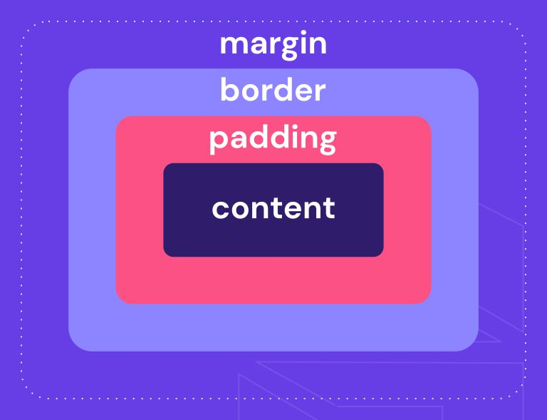
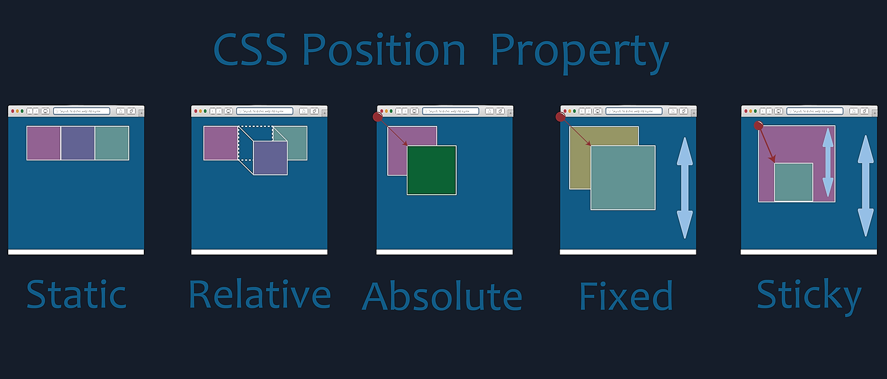

Alguns exemplos de tags são: head, body, h1-h6, label, button

VENHA APRENDER OQUE SÃO TAGS!
A tag serve como um marcador de texto, as tags devem sempre ser abertas e fechadas e podem ser conhcidas ambém como elementos.
Dentro das tags, há uma divisão para as tgs semânticas que fornecem um significado estrutural ao conteúdo. Em outras palavras, elas comunicam a função de uma determinada seção de conteúdo para os navegadores e mecanismos de busca. Isso é crucial, pois ajuda a criar uma hierarquia lógica e organizada, tornando o código mais legível e a página mais compreensível para os usuários.
header: Define o cabeçalho da página ou de uma seção.
nav: Representa a navegação do site.
main: Indica o conteúdo principal da página.
article: Usado para conteúdo autônomo, como posts de blog.
section: Divide o conteúdo em seções temáticas.
aside: Representa conteúdo relacionado, como barras laterais.
footer: Define o rodapé da página ou de uma seção.


Como funciona o CSS?
CSS é uma linguagem de estilo que define como os elementos de uma página web devem ser apresentados. A sigla CSS significa Cascading Style Sheets, ou Folha de Estilo em Cascatas.
Os atributos HTML "id" e "class" são usados para nomear elementos HTML. "Id" é usado para identificar um elemento único, enquanto "class" é usado para identificar um grupo de elementos.
Para chamar um ID no CSS, usa-se o símbolo # seguido do nome do ID.
Para chamar uma Classe no CSS, usa-se o ponto . seguido do nome da Classe.
Diferença de Margin, Padding e Border!
Utilizamos margin, ou margem, para dar espaçamento fora do conteúdo Já o padding, ou preenchimento, é utilizado para espaçamento dentro do conteúdo. O delimitante de do que fica dentro ou fora é a border.
Como ligar o CSS ao HTML?

Quais são as propiedades do Display?
Display-Flex
O Display-Flex permite que os elementos se alinhem e distribuam espaços entre si, ele permite que os elementos aumentem ou diminuam o tamanho, permite também crir designs adaptáveis - colocar ao lado.
Display-Grid
O Display-Grid é baseado em uma grade, com linhas E colunas - BIDIMENCIONAIS.
Display-Flexbox
O Display-FlexBox é baseado em uma grade, com linhas OU colunas - UNIDIMENCIONAIS.

Quais são as propiedades do Carrosel?
Em histórias subsequentes, Miles conhece os entes queridos de Peter Parker, May Parker, Gwen Stacy e Mary Jane Watson, que conhecem sua identidade secreta, e dão a ele os web shooters de Parker. Ele também encontra o Capitão América, que relutantemente concorda em treinar Miles.

Quais são as propiedades do Position?
No caso de Gwen Stacy, ela é apresentada como a "primeira e única Mulher-Aranha". Tal como o Peter Parker alternativo que Miles Morales conhece, também ela viajou involuntariamente pelo multiverso.
VENHA APRENDER OQUE SÃO TAGS!
A tag serve como um marcador de texto, as tags devem sempre ser abertas e fechadas e podem ser conhcidas ambém como elementos.
Alguns exemplos de tags são: head, body, h1-h6, label, button
Dentro das tags, há uma divisão para as tgs semânticas que fornecem um significado estrutural ao conteúdo. Em outras palavras, elas comunicam a função de uma determinada seção de conteúdo para os navegadores e mecanismos de busca. Isso é crucial, pois ajuda a criar uma hierarquia lógica e organizada, tornando o código mais legível e a página mais compreensível para os usuários.
header: Define o cabeçalho da página ou de uma seção.
nav: Representa a navegação do site.
main: Indica o conteúdo principal da página.
article: Usado para conteúdo autônomo, como posts de blog.
section: Divide o conteúdo em seções temáticas.
aside: Representa conteúdo relacionado, como barras laterais.
footer: Define o rodapé da página ou de uma seção.
Como funciona o CSS?
CSS é uma linguagem de estilo que define como os elementos de uma página web devem ser apresentados. A sigla CSS significa Cascading Style Sheets, ou Folha de Estilo em Cascatas.
Os atributos HTML "id" e "class" são usados para nomear elementos HTML. "Id" é usado para identificar um elemento único, enquanto "class" é usado para identificar um grupo de elementos.
Para chamar um ID no CSS, usa-se o símbolo # seguido do nome do ID.
Para chamar uma Classe no CSS, usa-se o ponto . seguido do nome da Classe.
Diferença de Margin, Padding e Border!
Utilizamos margin, ou margem, para dar espaçamento fora do conteúdo Já o padding, ou preenchimento, é utilizado para espaçamento dentro do conteúdo. O delimitante de do que fica dentro ou fora é a border.